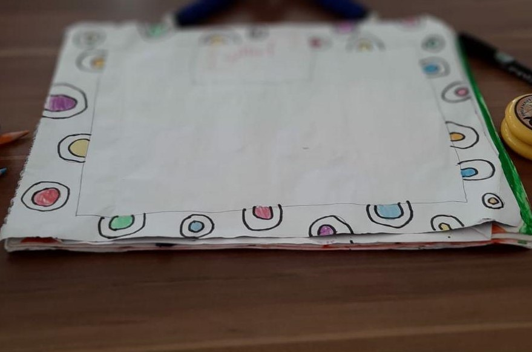
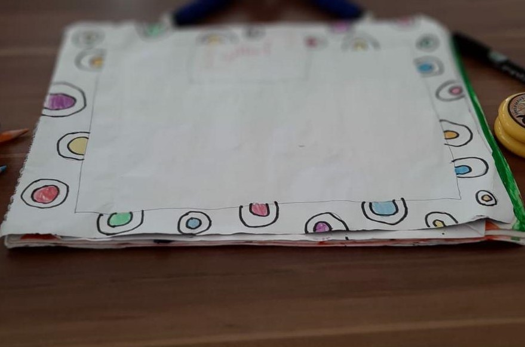
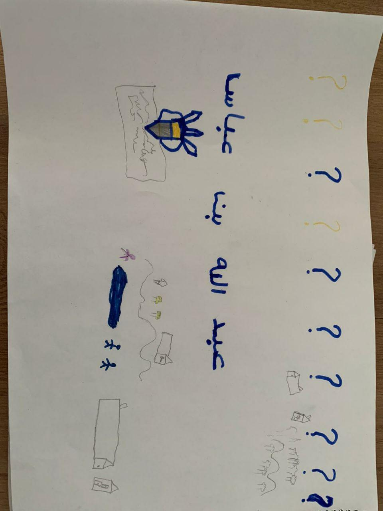
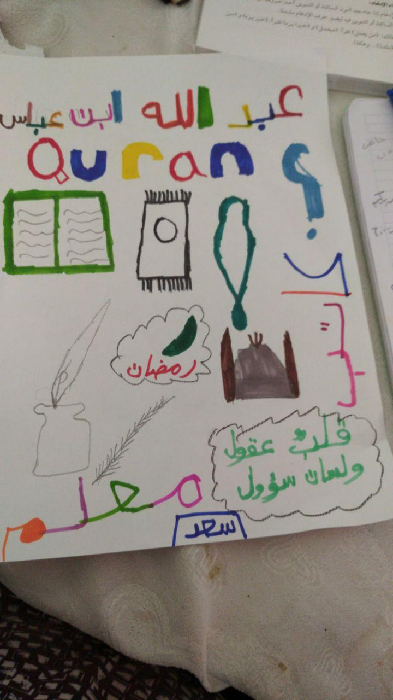
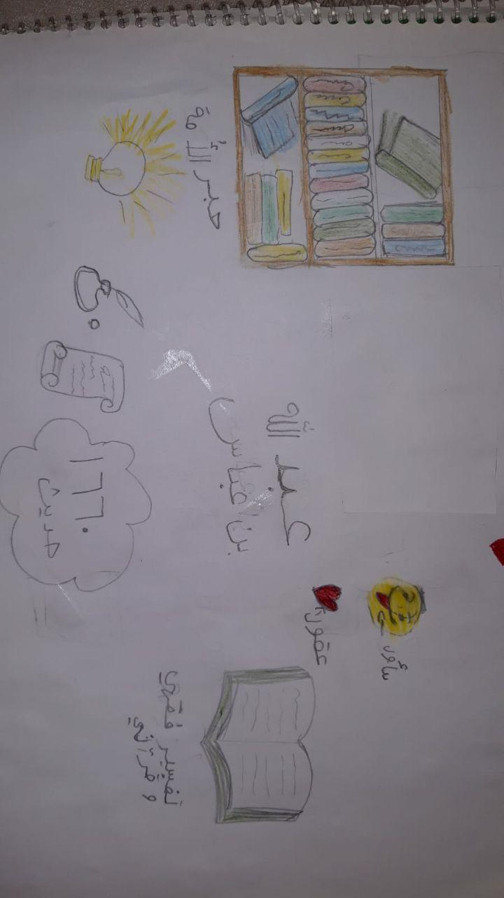
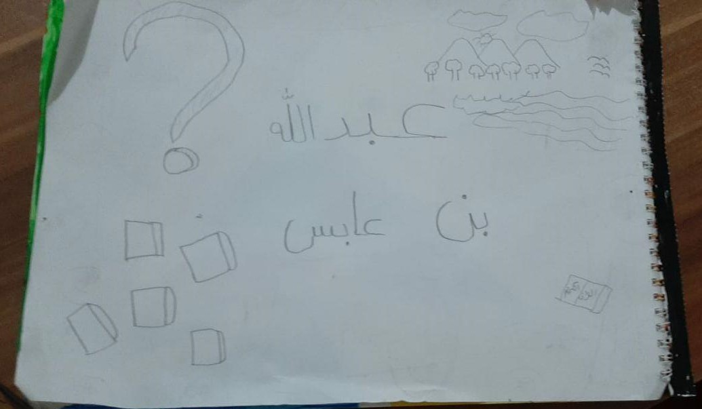
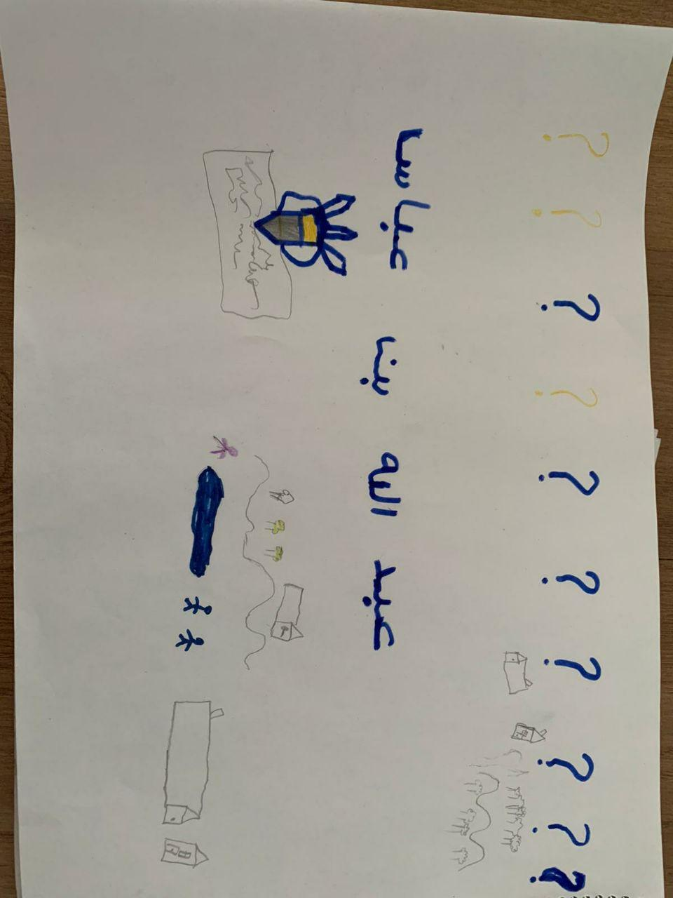
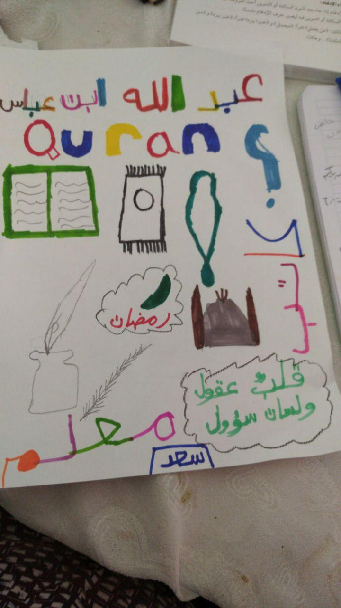
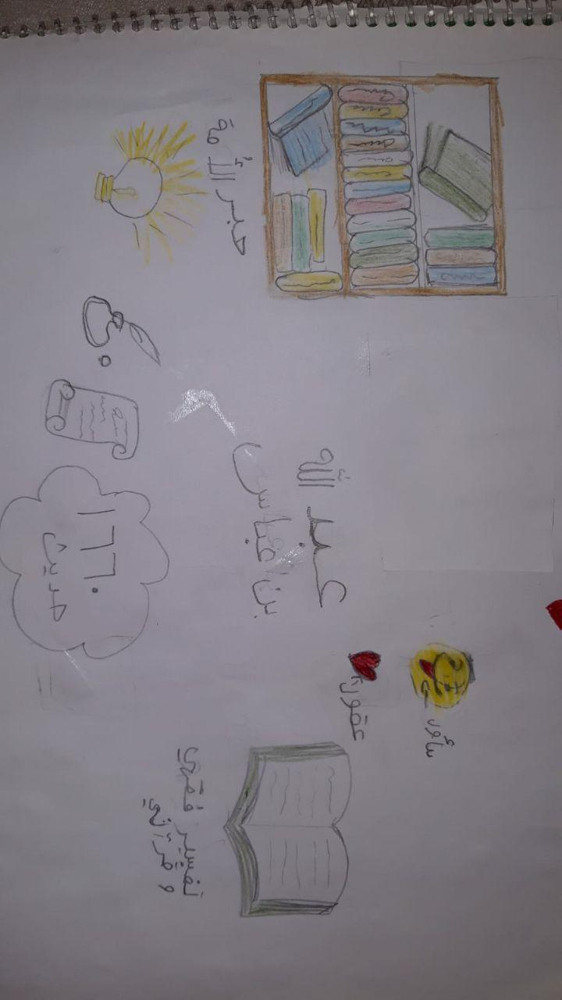
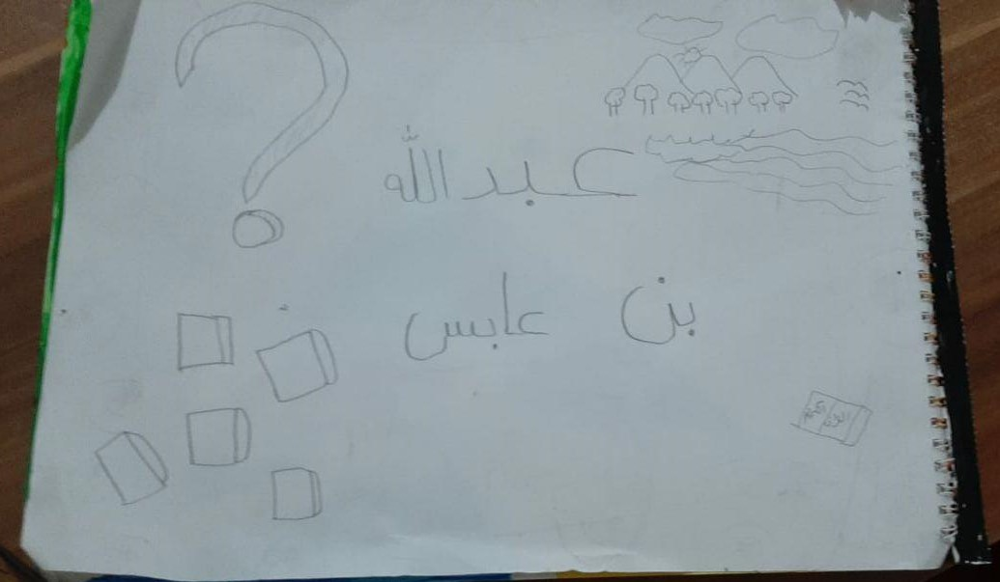

الجواب: لا، بالطبع. مر القرآن على مراحل ثلاثة من الكتابة.
أولًا، كان يُكتَب فور نزوله. و كان هناك ما لا يقل عن ٢٠ صحابي يكتبون الآيات من رسول الله مباشرةً، منهم زيد.
ثم مات الرسول، و اضطر المسلمون في زمن أبي بكر إلى جمع القرآن في مصحف واحد لكي لا يضيع بسبب موت الحفاظ في المعارك الكثيرة. فأصبح هناك مصحف واحد كبير مجموع و كامل. 📖 ثم جاء عثمان و كان الإسلام قد انتشر في بلدان كثيرة و بدأ المسلمون يقرأون القرآن بلهجات مختلفة فأمر سيدنا عثمان بنسخ مصحف أبو بكر إلى ٦ مصاحف و اشترط ألا يكون في المصحف كلام إلا كلام القرآن و أن يُكتَب بلهجة قريش الأصلية. و حرق بقية المصاحف لكي لا يحدث أي اختلاف بين المسلمين.
و في كل هذه المراحل، كان لزيد بن ثابت دورًا. فقد كان يكتب بجانب رسول الله في المرحلة الأولى، و كان هو رئيس المجموعة التي جمعت القرآن في المرحلة الثانية و أيضًا كان رئيس المجموعة مرة أخرى في المرحلة الثالثة. و لهذا فإن سيدنا زيد يأخذ أجر كل واحد فينا عندما نقرأ في المصحف، فهو الذي قام بجهد كبير ليوصله إلينا و يحقق وعد الله في الآية {إنا نحن نزلنا الذكر و إنا له لحافظون} 🤗💕
للاطلاع على شرائح الدرس اضغط هناو رزقه الله حكمةً كبيرة حتى أنه كان يجلس بين الشيوخ و يتكلم فيسمعه سيدنا عمر بن الخطاب و الشيوخ الكبار، و كان أيضًا يفسّر سور القرآن فيندهش الناس من جمال تفسيره، و عندما أصبح عالمًا كبيرًا كان الناس يزدحمون على باب بيته حتى أنهم كانوا يسدون الطرقات من كثرتهم! 😵
الواجب:

 

 







تعرفنا على بعض العلماء المسلمين، مثل ابن الهيثم مكتشف علم البصريات، و الجزري صانع ساعة الفيل و الكثير من الآلات الميكانيكية، و مريم الإسطرلابي صانعة الإسطرلاب (الذي نتج عنه البوصلة و الساعة فيما بعد)، و عباس بن فرناس أول من حاول الطيران. و أيضًا إسحاق نيوتن العالم الأوروبي مكتشف الجاذبية الأرضية الذي أتى بعد هؤلاء العلماء و استفاد منهم الكثير.
نرى أن المسلمين دائمًا ما كان منهم العلماء و الفقهاء و المخترعين، بداية من الصحابة ثم من أتى بعدهم، كثيرون جدًا، و هذا لأن الله سبحانه و تعالى يأمر المسلمين في القرآن الكريم بأن يتأملوا و يتفكروا في خلقه دائمًا. فينتج عن التأمل اختراعات و علوم كبيرة.
يتكلم الله عن المؤمنين في القرآن فيقول: (ٱلَّذِینَ یَذۡكُرُونَ ٱللَّهَ قِیَـٰمࣰا وَقُعُودࣰا وَعَلَىٰ جُنُوبِهِمۡ وَیَتَفَكَّرُونَ فِی خَلۡقِ ٱلسَّمَـٰوَ ٰتِ وَٱلۡأَرۡضِ رَبَّنَا مَا خَلَقۡتَ هَـٰذَا بَـٰطِلࣰا سُبۡحَـٰنَكَ...) [سورة آل عمران، آية ١٩١]
للاطلاع على شرائح الدرس اضغط هناكان يُعرَف في مكة بالفتى المدلل الذي يلبس أغلى الثياب و يضع أجمل العطور، فلما استشهد لم يجدوا شيئًا يدفنوه فيه إلا قطعة قماش قصيرة لا تغطي جسمه كله. عاش حياته يحمل راية الإسلام، و مات و هو يحملها إلى آخر لحظة. ❤️
للاطلاع على شرائح الدرس اضغط هناالواجب: